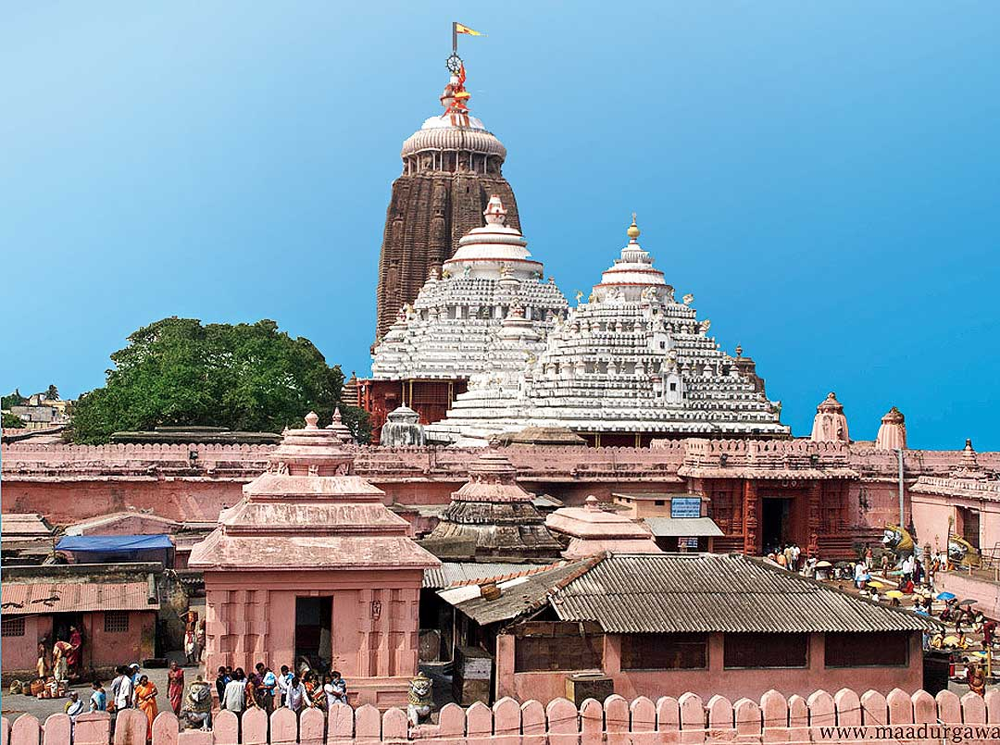

Jagannath Temple
 The Shree Jagannath Temple is an important Hindu temple dedicated to Jagannath, a form of Vishnu, in Puri in the state of Odisha on the eastern coast of India. The present temple was rebuilt from the 10th century onwards, on the site of an earlier temple, and begun by King Anantavarman Chodaganga Deva, first of the Eastern Ganga dynasty.
The Puri temple is famous for its annual Ratha yatra, or chariot festival, in which the three principal deities are pulled on huge and elaborately decorated temple cars. These gave their name to the English term 'Juggernaut'. Unlike the stone and metal icons found in most Hindu temples, the image of Jagannath is made of wood and is ceremoniously replaced every twelve or nineteen years by an exact replica. It is one of the Char Dham.

The temple is sacred to all Hindus and especially in those of the Vaishnava traditions. Many great Vaishnava saints,
such as Ramanujacharya, Madhvacharya, Nimbarkacharya, Vallabhacharya and Ramananda were closely associated with the
temple. Ramanuja established the Emar Mutt near the temple and Adi Shankaracharya established the Govardhana Mutt,
which is the seat of one of the four Shankaracharyas. It is also of particular significance to the followers of the
Gaudiya Vaishnavism whose founder Chaitanya Mahaprabhu, was attracted to the deity, Jagannath, and lived in Puri for
many years.